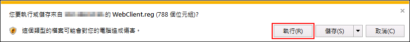
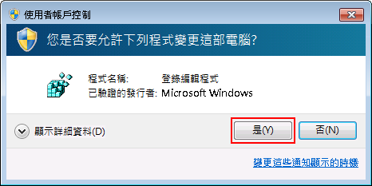
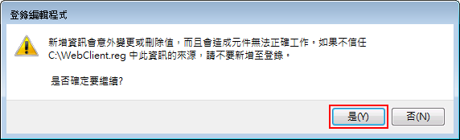
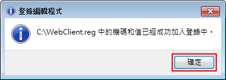
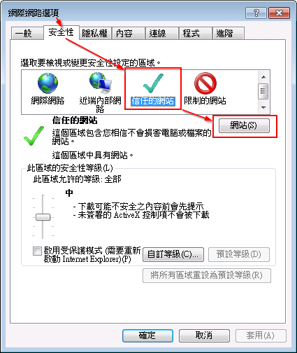
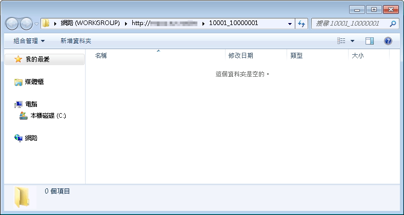

- 安裝 WebClient 登入檔
- 下載 WebClient.reg 登入檔
- 直接點選【執行】
 - 允許變更這部電腦，點【是】
 - 是否確定要繼續，點【是】
 - 已經成功加入登入中，點【確定】

- 新增『信任的網站』
- 開啟IE，點選『工具』>『網際網路選項』>『安全性』
- 點選『信任的網站』，再點『網站』
 -
取消【勾選】『此區域內的所有網站需要伺服器驗證(https:)』
輸入平台網址，http://
點【新增】
- 重新開機電腦
- 開始使用 Web 資料夾
- 到課程辦公室＞課程管理＞教材上傳，於 Web 資料夾，點【開啟】
- 當開啟檔案總管後，則可以將所需檔案複製、貼上或拖拉方式上傳
